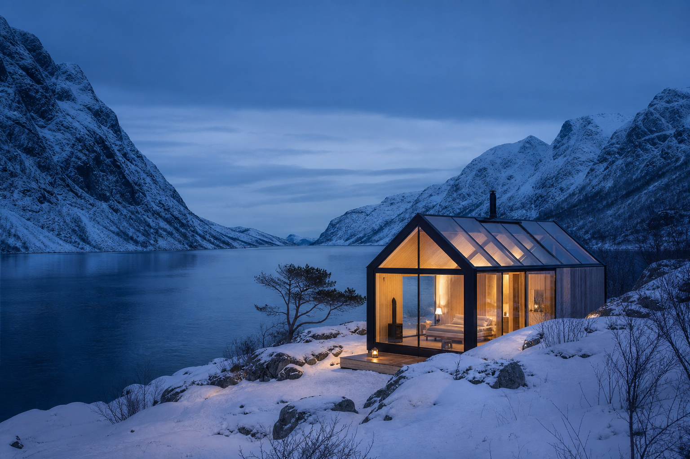
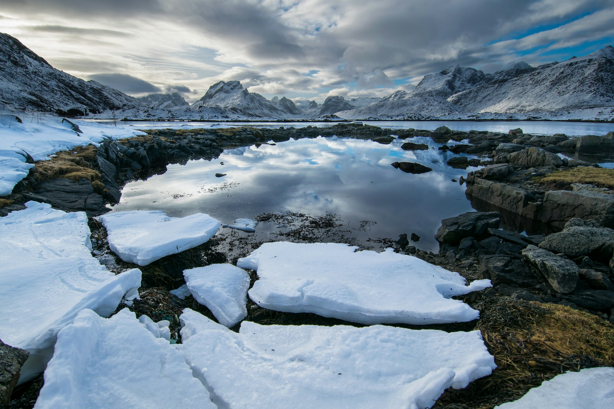

Sail Through Norway’s Fjords
Board a private yacht and spend the day passing waterfalls, mountain farms and hidden coves. Stop for lunch in a small waterside village or step ashore for a walk known only to your local guide.
Where wild landscapes meet quiet sophistication
Scandinavia does luxury in its own way. It is rarely loud or extravagant. Instead, it is found in thoughtful design, beautiful surroundings, exceptional food and the freedom to experience a place without feeling rushed.
Your days might begin on the edge of a silent fjord, continue with lunch in a celebrated Copenhagen restaurant and end beneath the glow of the northern sky. It is a region of striking contrasts, where centuries-old traditions sit comfortably alongside some of the most forward-thinking cities in the world.
We design each journey around the season and the way you like to travel, bringing together the places worth seeing with quieter moments that allow you to take everything in.

Board a private yacht and spend the day passing waterfalls, mountain farms and hidden coves. Stop for lunch in a small waterside village or step ashore for a walk known only to your local guide.
Discover Stockholm’s maritime past during a private visit without the usual crowds. Stand beside the Vasa and hear the remarkable story of the ship, its sinking and its recovery centuries later.
Stay in a remote lodge or glass-roofed suite, surrounded by snow-covered forest. Spend the evening by the fire before stepping outside to watch the sky.
Enjoy a private meal prepared with ingredients drawn from the sea, forest and surrounding landscape, accompanied by stories from the people who call the region home.
Explore the city with a local expert, visiting private studios, architectural landmarks and independent shops before sitting down to a beautifully considered Nordic lunch.
Summer brings long days, green landscapes and the midnight sun in the far north. It is ideal for sailing, hiking and travelling through the fjords.
Autumn offers quieter cities, crisp air and rich seasonal colours, while winter is made for snowy adventures, cosy lodges and northern lights. Spring is fresh and peaceful, with fewer visitors and the first signs of life returning to the landscape.
A Scandinavian holiday can be as active or unhurried as you wish. Combine vibrant cities with remote retreats, travel by train through the mountains or settle into one exceptional lodge and let the landscape come to you.
We will shape the journey around your pace, choosing the right hotels, routes and experiences to make it feel personal from the very beginning.
Let us create a Scandinavian journey filled with remarkable landscapes, meaningful experiences and moments of complete calm.
Begin Your Journey